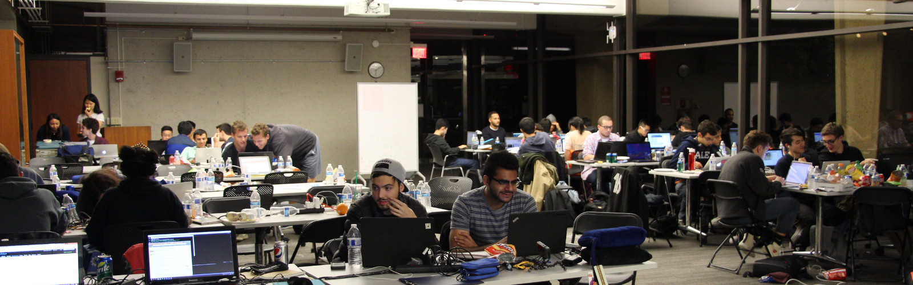

HackHarvard 2016, the Largest Hackathon at Harvard University
Worked as Director, Chief Financial Officer, and Logistics Committee Chair
HackHarvard 2016, the second annual HackHarvard Hackathon event
The second ever HackHarvard event was held from October 21-23, 2016 at the Harvard Student Organization Center at Hilles, or the SOCH. There were 551 attendees who checked in as well as over 80 projects submitted. We accepted people from 33 U.S. States and 23 foreign countries. Teams of 1-4 students worked for 36 hours (Friday 9pm to Sunday 9am) to build unique projects incorporating computer science and emerging technologies.
The above are a collection of promotional materials and media features I've been involved in as a part of HackHarvard. The PuddleScope feature specifically focuses on the philosophy that drives our HackHarvard organizing team. That article is particularly nice because it gets to the core of what I believe is the best approach to managing the HackHarvard team.